Select Your Network
A Tutorial to Help You Lock Your Orbi to a Preferred Operator
1. Download The App
NETGEAR ORBI APP DOWNLOAD2. App Setup
On the first launch of the Orbi app you'll have to agree with the Terms and Conditions, approve some permissions for the app and log in with a new or existing account:
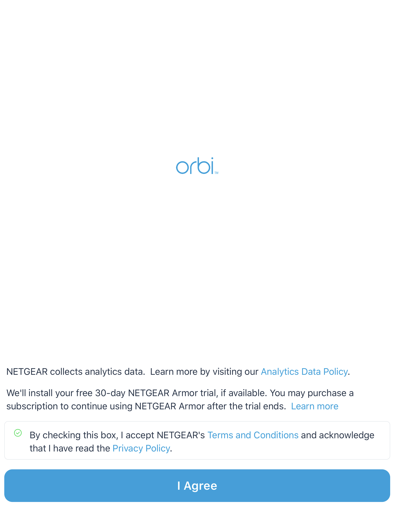
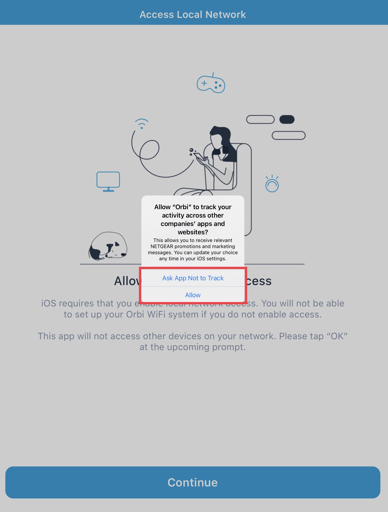
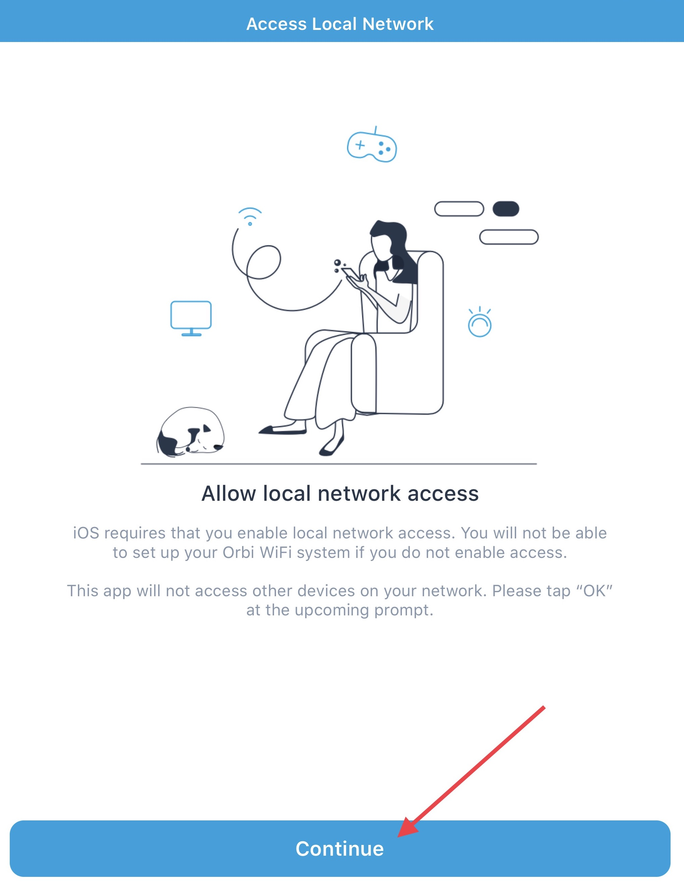
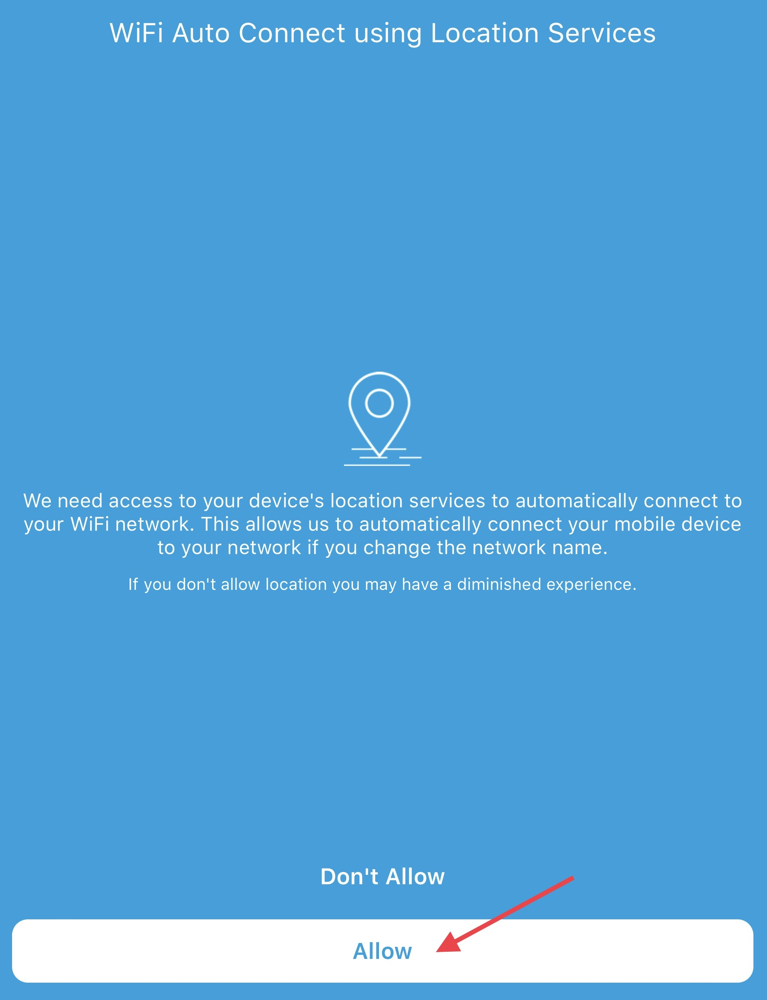
Create a NETGEAR Account
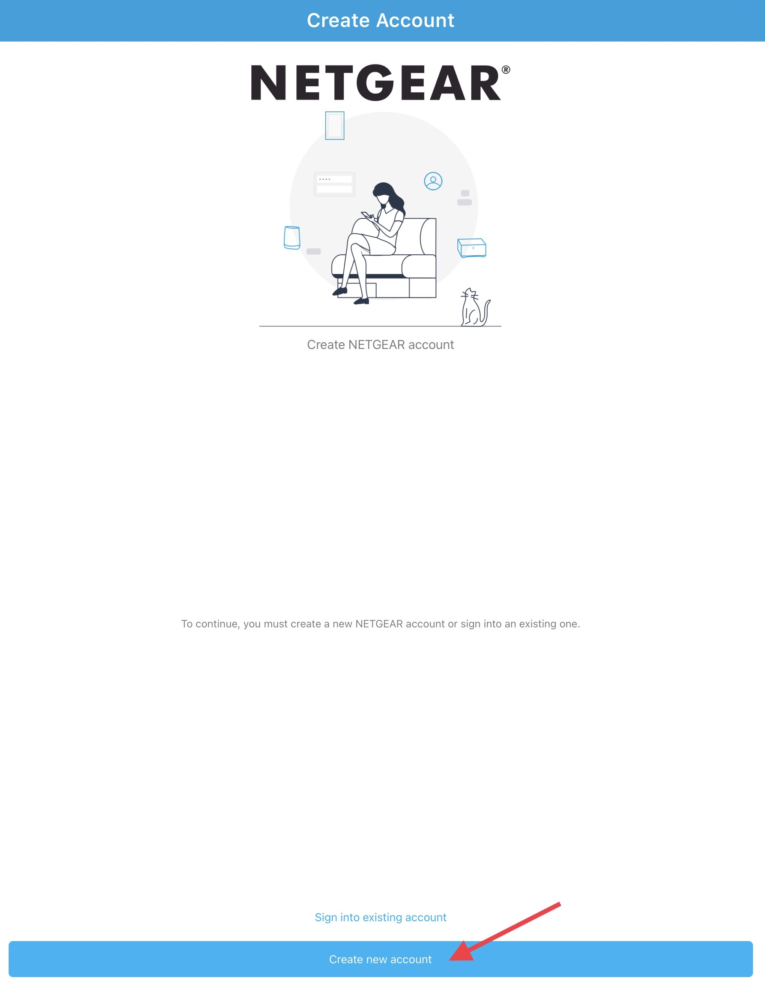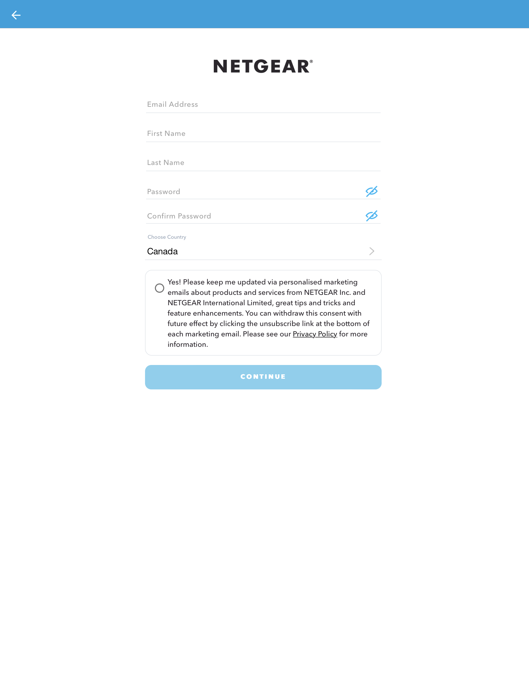
3. Connecting to Your Router
Once you have successfully created a NETGEAR account you will be able to detect your router and access its settings. Please make sure your device is connected to the Orbi’s wireless network.
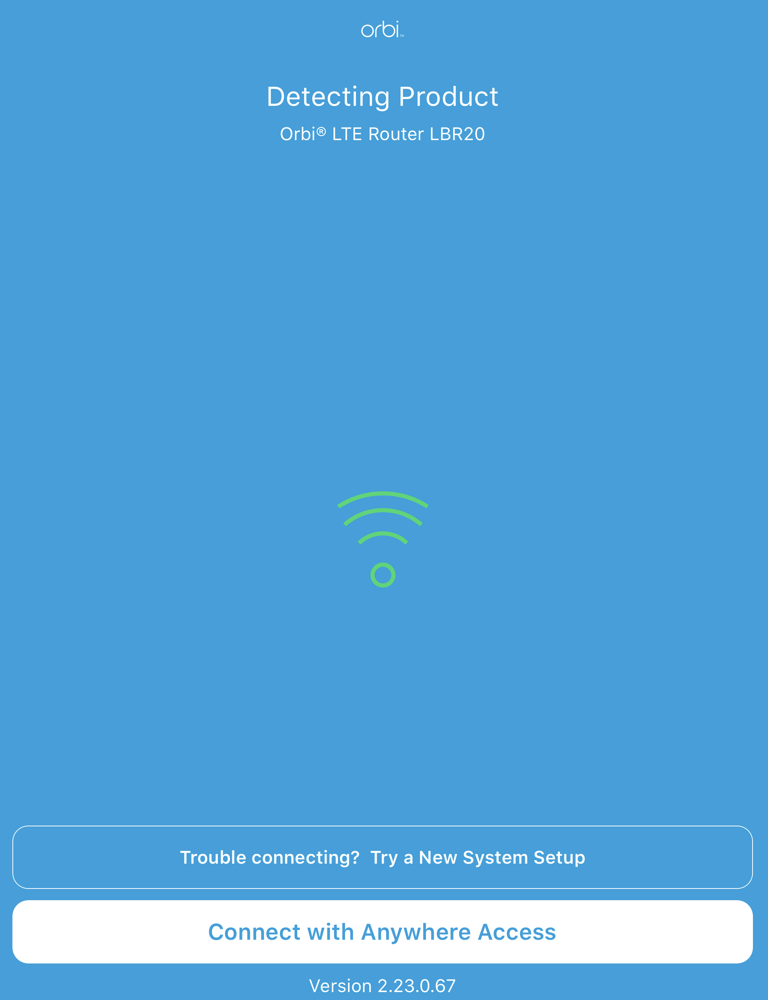
4. Manual Network Selection
By default, the router auto connects to a network and tower it thinks will work best. If you have a preferred network you’d like to connect to you can manually select one:

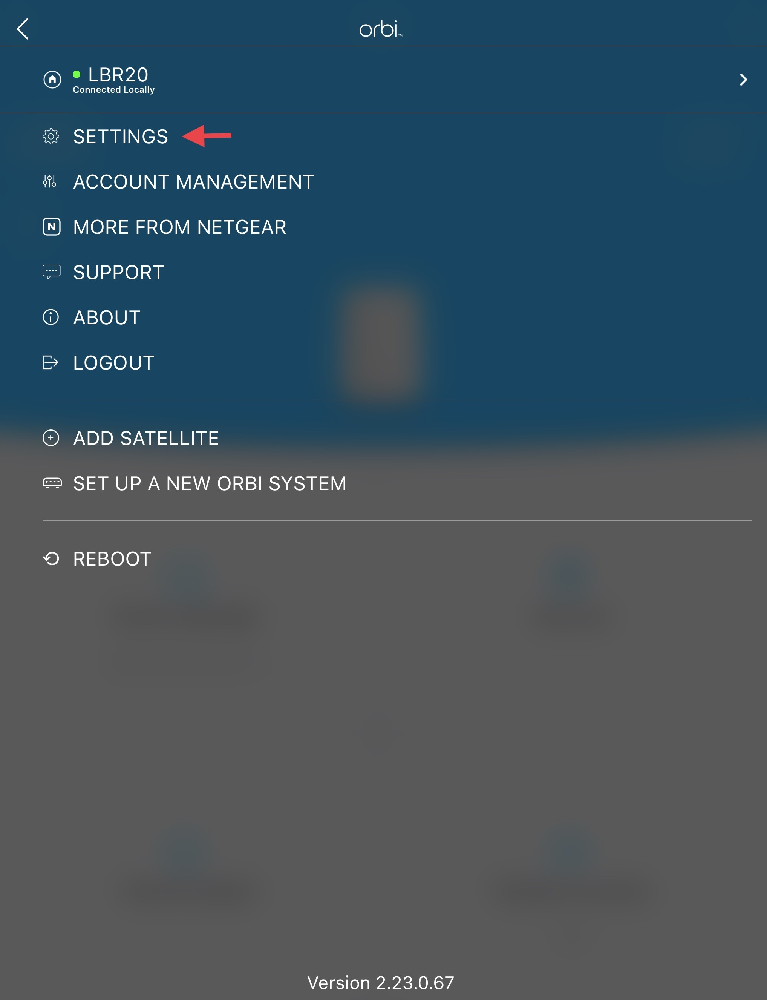
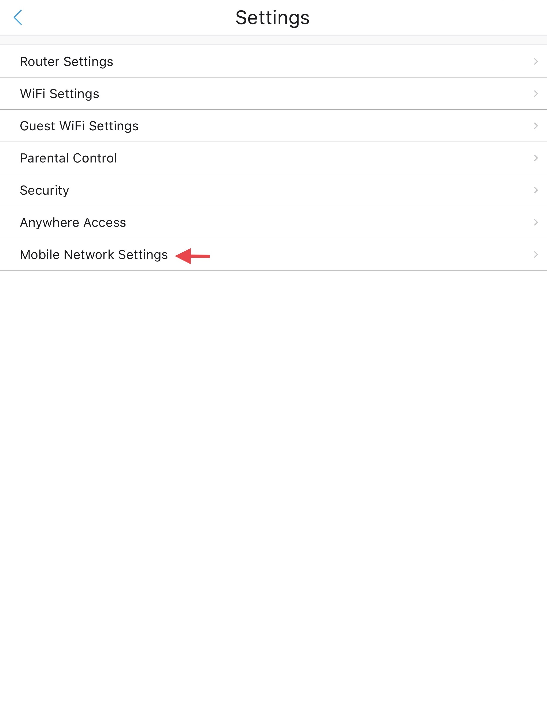
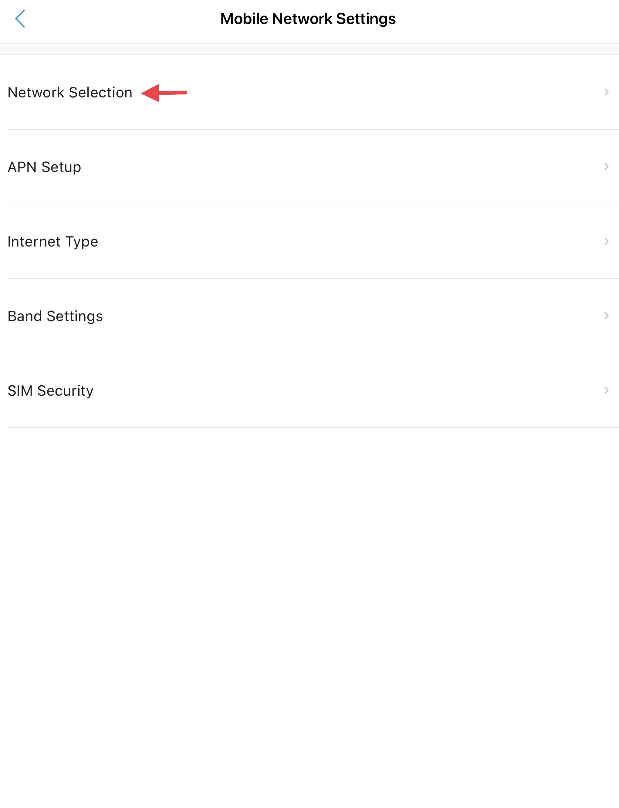
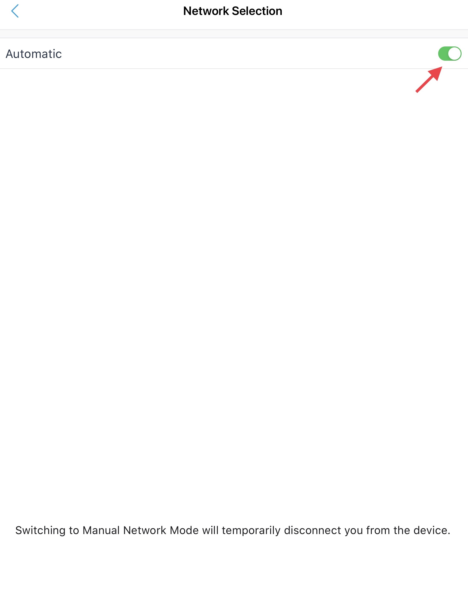
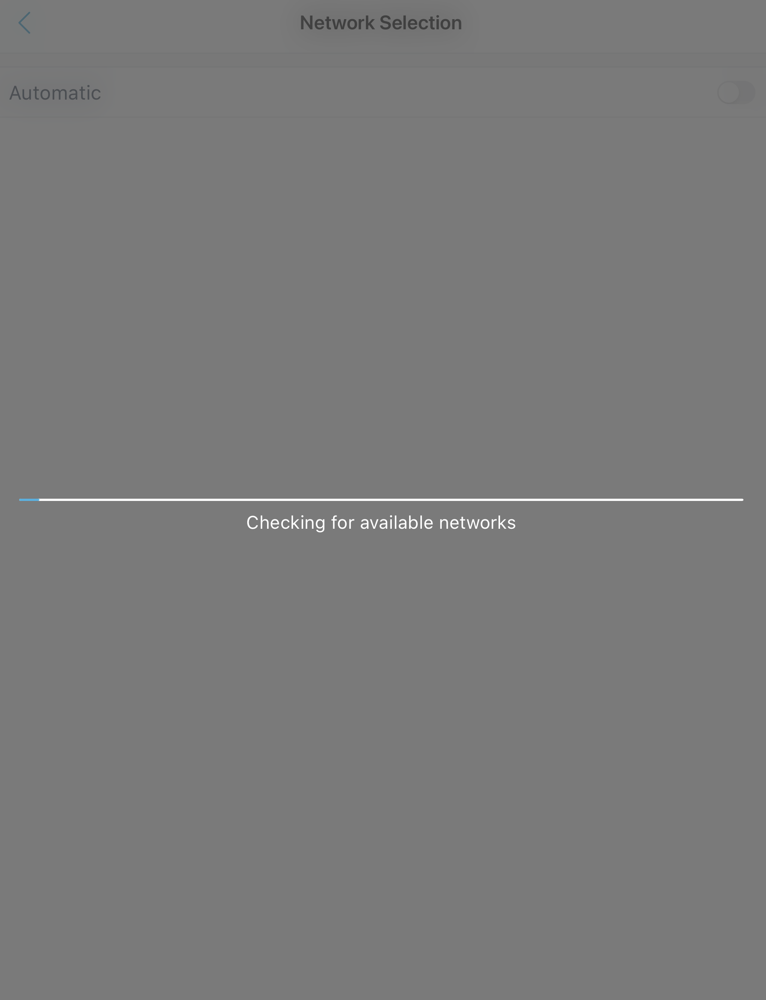
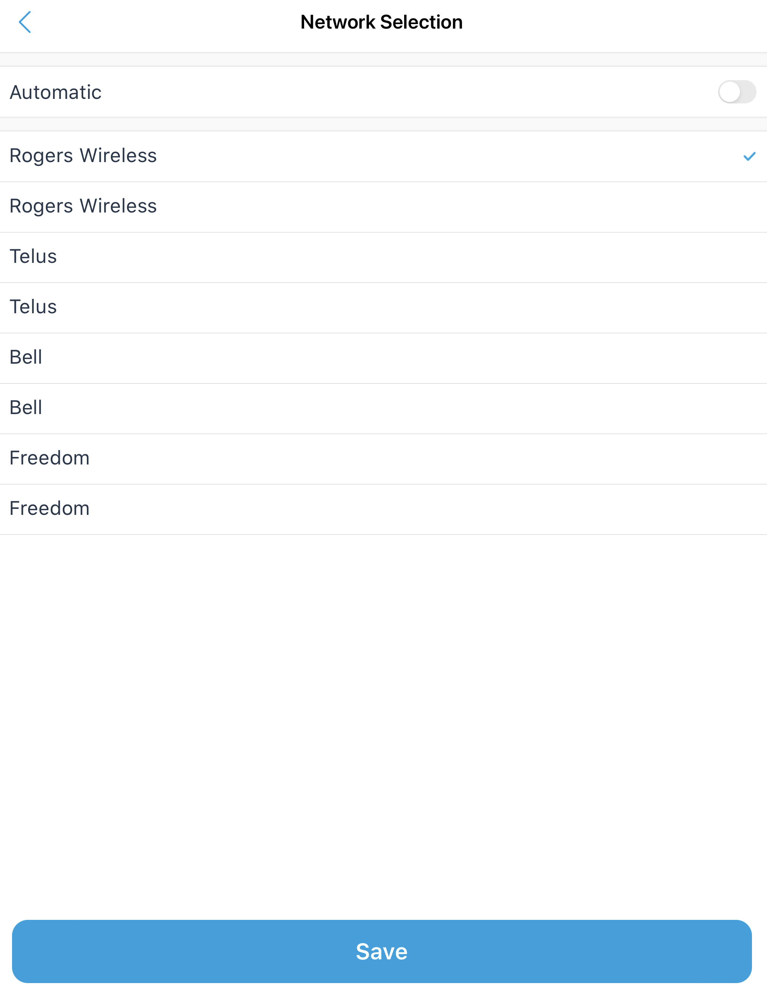